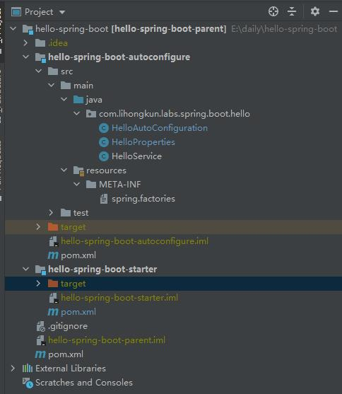

官方提供的Spring Boot Starter涵盖面非常广，几乎所有流行的组件和方案都可以找到对应的封装。不过每个系统总会有自己的公共代码，可以自己进行Starter的封装。
下面以一个例子进行说明，我们需要一个HelloService的功能，但是又不想自己进行很多复杂的声明或者配置（实际应用场景中，远比HelloService的自动配置复杂得多）
package com.lihongkun.labs.spring.boot.hello;
public class HelloService {
private String msg;
public void sayHello(){
System.out.println("hello " + msg);
}
public void setMsg(String msg) {
this.msg = msg;
}
}
工程结构
创建一个Spring Boot Starter的工程，目录结构如下图，包含一个父工程，一个自动配置工程和Starter工程

父工程
父工程只有一个pom文件，定义了Spring Boot 的版本依赖、编译的目标版本以及本项目的子模块。
<groupId>com.lihongkun.labs.spring.boot</groupId>
<artifactId>hello-spring-boot-parent</artifactId>
<version>0.0.1-SNAPSHOT</version>
<modules>
<module>hello-spring-boot-autoconfigure</module>
<module>hello-spring-boot-starter</module>
</modules>
<packaging>pom</packaging>
<dependencyManagement>
<dependencies>
<dependency>
<groupId>org.springframework.boot</groupId>
<artifactId>spring-boot-dependencies</artifactId>
<version>2.3.2.RELEASE</version>
<type>pom</type>
<scope>import</scope>
</dependency>
</dependencies>
</dependencyManagement>
<build>
<plugins>
<plugin>
<groupId>org.apache.maven.plugins</groupId>
<artifactId>maven-compiler-plugin</artifactId>
<version>3.8.0</version>
<configuration>
<release>11</release>
</configuration>
</plugin>
</plugins>
</build>
自动配置
接着创建autoconfigure工程，它会引入比较多的依赖，非必要的依赖使用optional的方式来引入。
<parent>
<artifactId>hello-spring-boot-parent</artifactId>
<groupId>com.lihongkun.labs.spring.boot</groupId>
<version>0.0.1-SNAPSHOT</version>
</parent>
<modelVersion>4.0.0</modelVersion>
<artifactId>hello-spring-boot-autoconfigure</artifactId>
<dependencies>
<dependency>
<groupId>org.springframework.boot</groupId>
<artifactId>spring-boot-autoconfigure</artifactId>
</dependency>
<!--
如果是实现 autoconfiguration 功能的依赖包一定要使用<optional>true</optional>
因为你会在本工程里面定义多个不同功能的 autoconfiguration，引入方可能只使用了一个。
如
<dependency>
<groupId>x.y.z</groupId>
<artifactId>hey</artifactId>
<version>0.0.1-SNAPSHOT<version>
<optional>true</optional>
</dependency>
<dependency>
<groupId>x.y.z</groupId>
<artifactId>hello</artifactId>
<version>0.0.1-SNAPSHOT<version>
<optional>true</optional>
</dependency>
-->
</dependencies>
当我们的AutoConfiguration需要依赖一些外部配置的时候，比如数据库的配置或者当前的HelloService它需要一个msg，那么我们就可以创建一个Configuration的Properties对象，为其定义一个前缀。当被启用的时候，容器托管的配置即自动创建并填充到其ConfigurationProperties对象中。
package com.lihongkun.labs.spring.boot.hello;
import org.springframework.boot.context.properties.ConfigurationProperties;
@ConfigurationProperties(prefix = HelloProperties.HELLO_PREFIX)
public class HelloProperties {
public static final String HELLO_PREFIX = "hello";
private String msg;
public String getMsg() {
return msg;
}
public void setMsg(String msg) {
this.msg = msg;
}
}
不同的功能分在不同的AutoConfiguration实现，此处我们实现一个HelloAutoConfiguration，主要用来声明一个HelloService的Bean，这个Bean是条件创建的，也就是你引入后。如果觉得需要自己自定义，可以进行覆盖。HelloAutoConfiguration使用一个注解修饰EnableConfigurationProperties，这个注解的意思即当本类被实例化的时候则启用HelloProperties，创建一个HelloProperties的bean并填充配置值到其中。
package com.lihongkun.labs.spring.boot.hello;
import org.springframework.beans.factory.annotation.Autowired;
import org.springframework.boot.autoconfigure.condition.ConditionalOnMissingBean;
import org.springframework.boot.context.properties.EnableConfigurationProperties;
import org.springframework.context.annotation.Bean;
import org.springframework.context.annotation.Configuration;
@Configuration
@EnableConfigurationProperties(HelloProperties.class)
public class HelloAutoConfiguration {
@Autowired
private HelloProperties helloProperties;
@Bean
@ConditionalOnMissingBean
public HelloService helloService() {
HelloService helloService = new HelloService();
helloService.setMsg(helloProperties.getMsg());
return helloService;
}
}
准备就绪后，还需要一个重要的步骤。META-INF/spring.factories把HelloAutoConfiguration配置进去。格式如下
org.springframework.boot.autoconfigure.EnableAutoConfiguration=com.lihongkun.labs.spring.boot.hello.HelloAutoConfiguration
定义Starter
这是一个简单的pom工程，主要用来引入本Starter所需要的依赖，因为autoconfigure工程的optional依赖需要在这里正式引入。
<parent>
<artifactId>hello-spring-boot-parent</artifactId>
<groupId>com.lihongkun.labs.spring.boot</groupId>
<version>0.0.1-SNAPSHOT</version>
</parent>
<modelVersion>4.0.0</modelVersion>
<artifactId>hello-spring-boot-starter</artifactId>
<packaging>pom</packaging>
<dependencies>
<dependency>
<artifactId>hello-spring-boot-autoconfigure</artifactId>
<groupId>com.lihongkun.labs.spring.boot</groupId>
<version>0.0.1-SNAPSHOT</version>
</dependency>
<!--
本Starter依赖的包，在 autoconfigure 中 引入方式 optional，故此处需要再引入
<dependency>
<groupId>x.y.z</groupId>
<artifactId>hello</artifactId>
</dependency>
-->
</dependencies>
使用
自定义工程本地install或者deploy到仓库中就可以直接进行使用了。
<groupId>com.lihongkun.labs</groupId>
<artifactId>hello</artifactId>
<version>1.0-SNAPSHOT</version>
<dependencies>
<dependency>
<groupId>com.lihongkun.labs.spring.boot</groupId>
<artifactId>hello-spring-boot-starter</artifactId>
<version>0.0.1-SNAPSHOT</version>
</dependency>
</dependencies>
<build>
<plugins>
<plugin>
<groupId>org.apache.maven.plugins</groupId>
<artifactId>maven-compiler-plugin</artifactId>
<version>3.8.0</version>
<configuration>
<release>11</release>
</configuration>
</plugin>
</plugins>
</build>
package com.lihongkun.labs;
// Application.java
import com.lihongkun.labs.spring.boot.hello.HelloService;
import org.springframework.boot.SpringApplication;
import org.springframework.boot.autoconfigure.SpringBootApplication;
import org.springframework.context.ApplicationContext;
@SpringBootApplication
public class Application {
public static void main(String[] args) {
ApplicationContext context = SpringApplication.run(Application.class,args);
HelloService helloService = context.getBean(HelloService.class);
helloService.sayHello();
}
}
//application.properties
hello.msg=spring boot stater
// 运行结果
hello spring boot stater
小结
官方推荐自定义的Starter的命名方式是[custom]-spring-boot-starter，把功能寓意的名字放在前面。
工程结构官方也是有推荐的方式，一般公共的功能和自动化配置均放在一个autoconfigure项目中，此项目中除了定义自动化配置的一些AutoConfiguration外，在引入对应依赖的时候均使用optional的方式。原因是这么多功能并不知道使用者需要使用哪一个。
接着定义各个功能的Starter，这类项目中没有java源代码，而是指定功能的依赖，也就是上面用optional所引入的依赖，Spring Boot 使用了很多 ConditionalOn 注解来实现条件加载。比如ConditionalOnClass表示你的classpath下有某个类的字节码才进行自动配置。一旦你引入了某功能的Starter则autoconfigure的AutoConfiguration自动生效。